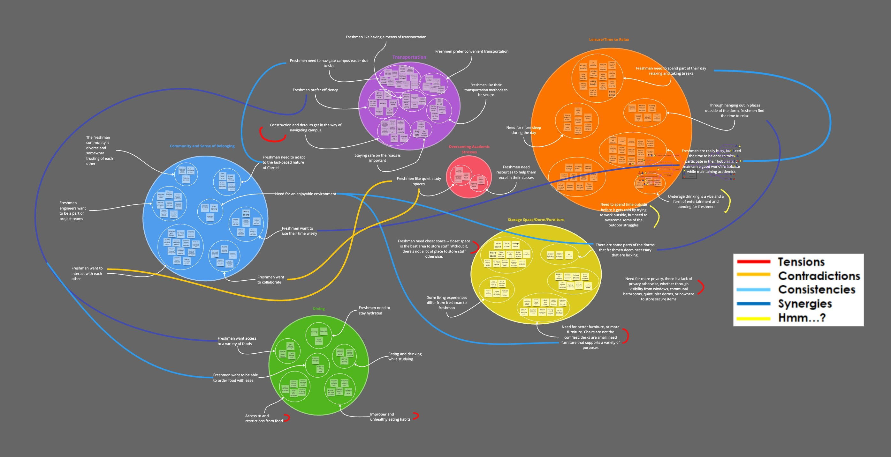
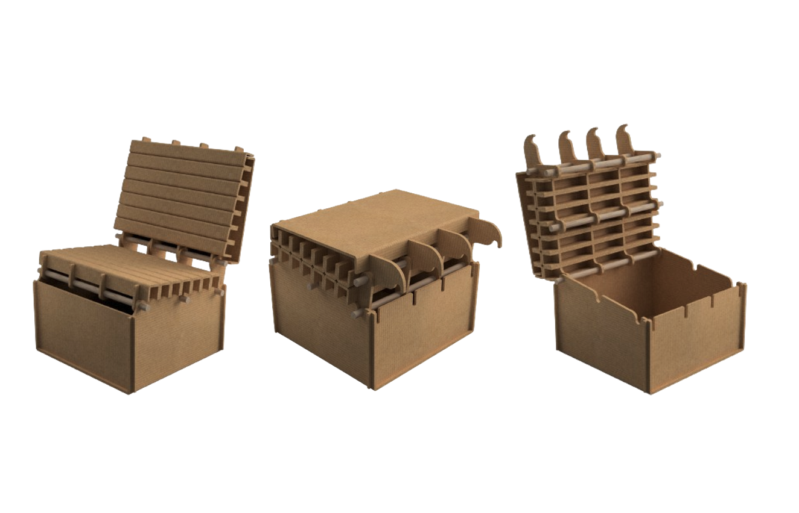
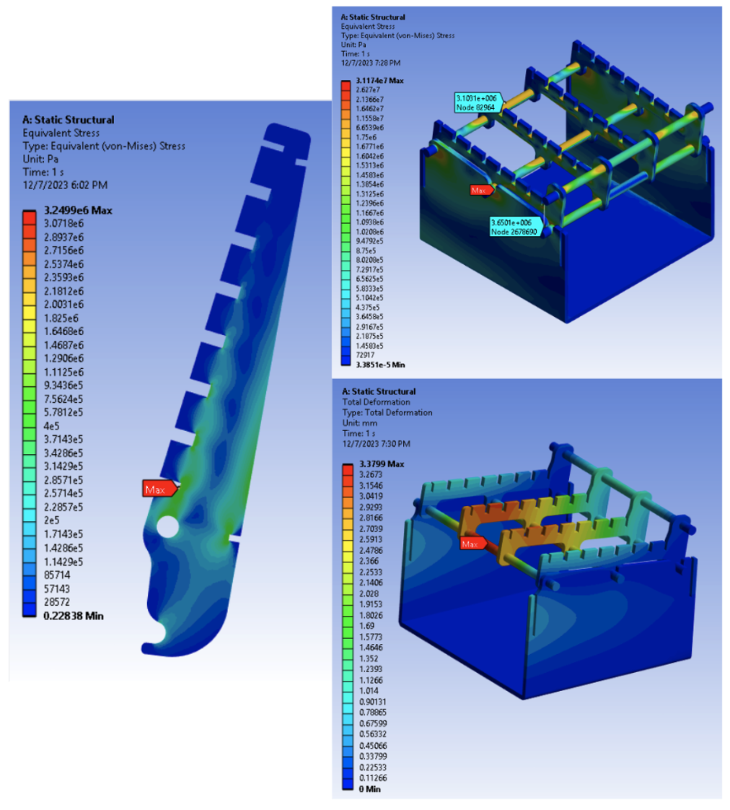
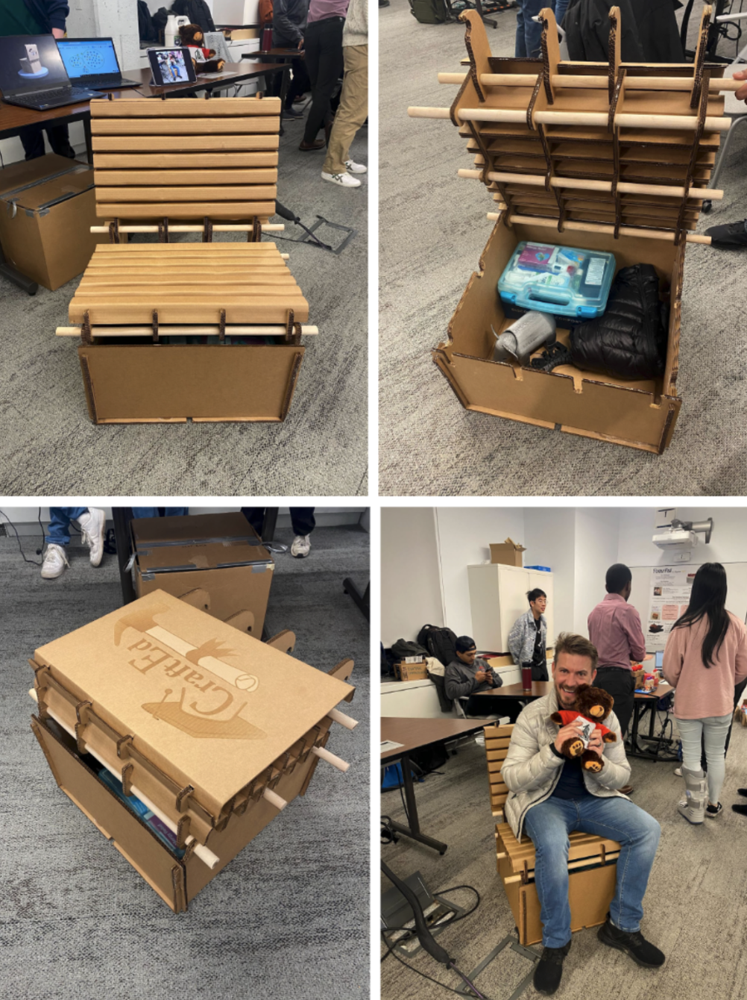

The Seated Storage Unit was my senior design project in MAE 4341: Innovative Product Design, in collaboration with four other students. After conducting empathy fieldwork and research with Cornell’s freshmen students, we aimed to design a system that provides multipurpose furniture that increased storage while encouraging socialization. However, we also observed the large amount of furniture that enters the landfill at the conclusion of a school year (nearly 250,000 pounds of trash enters the landfill at the end of the school year!) and decided to create a product that was both useful and sustainable.
The product is used in three forms. In one form, the product is a storage ottoman that is sized to easily fit under any dorm bed. In the other, the lid of the storage ottoman includes a flip-up backrest that turns the storage ottoman into a comfortable chair. In the final form, the lid of the storage ottoman is flat, allowing the user to place items onto the top of the unit as a coffee table.
We interviewed freshmen about their experiences around campus, identifying problems and worries through our conversations with them. We grouped these data points into categories to identify the most popular concerns among the freshmen class that we would create a solution to through our product.
 These were the groups of data points we formed from our empathy fieldwork, where we immersed ourselves into understanding the freshman experience.Once we had begun ideating our product, we created a simple initial prototype and asked users to test it (without telling them our idea) to get their initial thoughts and feedback on our design. We also utilized a Conjoint Analysis survey to determine the attributes of our product that were most important to customer satisfaction and progressed to create our final design after receiving this feedback.
We researched chair ergonomics and iterated on designs to ensure that our seat would be both comfortable and stable.
Initially, we had wanted to create a telescoping arm that would allow for chair reclination, but struggled with creating a design that wouldn’t fail. After our conjoint analysis, we opted for a simpler model with one set reclining angle. The backrest panel is attached to the main body with dowels as pins that lock into slots that we made in the back of the chair to hold it open securely.
 These were the three “modes” of our productHowever, a large concern of using cardboard as our main material is regarding failure. Using Ansys allowed us to determine the locations of stress in our model and ensure that the chair slotting mechanism would not cause failure. The stress of the chair was highest at the cutouts, and we needed to remove several features that we were considering (armholes and recessed wheels for easy movements) to allow for a more stable design.
 A static structural analysis in Ansys showed us that the areas where the chair notched were of the highest concern.Our chair ended up being stable enough to support us and our professors (who agreed that the chair was comfortable as well)!
 Final cardboard prototype.Here is a project pitch we needed to make for our project:
Our team's final report can be found here: